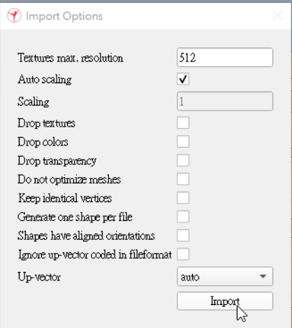
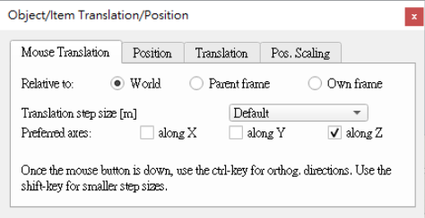

week2 <<
Previous Next >> week4
week3
利用CoppeliaSim進行模擬
模擬步驟
1.開啟想要模擬的檔案
File>Import>Mesh

2.移動到想要的位置
Object/item shift
將移動方向設為Z軸

將組合件拉至不會跟地板干涉
3.將組合件拆成多個零件
對組合件按右鍵 Edit>Grouping/Merging>Divide selected shape
4.將兩個踏板合成一個零件
按住shift點選兩個踏板>按右鍵 Edit>Grouping/Merging>Merge selected shape
5.新增旋轉軸
在空白處點選右鍵>Add>Joint>Revolute
6.將旋轉軸定位並給予轉速
按住shift點選前輪和旋轉軸>點選Object/item Translation>Position>Apply to selection
點選旋轉軸>Object/item Rotation/Orientation>Rotation>Own frame>在X軸輸入90>Rotate selection
點兩下旋轉軸名稱前的圖示>Show dynamic properties dialog
如果旋轉軸太小的話，可以修改Length(長度)跟Diameter(直徑)
將Motor properties和Lock motor when target velocity is zero打勾，並賦予速度
7.幫後輪跟踏板加上旋轉軸
將旋轉軸複製兩根，並分配給後輪跟踏板
按住shift點選後輪和第二根旋轉軸>點選Object/item Translation>Position>Apply to selection

按住shift點選踏板和第三根旋轉軸>點選Object/item Translation>Position>Apply to selection
8.零件組合
將前輪、後輪、踏板家道各自的旋轉軸分支下

按住shift點選不在旋轉軸分支下的零件>按右鍵 Edit>Grouping/Merging>Merge selected shape
再將三個旋轉軸加到組合件的分支下
9.設定動態特性
點兩下組合件名稱前的圖示>Show dynamic properties dialog
勾選Body is dynarnic
點兩下前輪、後輪、踏板名稱前的圖示>Show dynamic properties dialog
勾選Body is respondable和Body is dynarnic
10.進行模擬
week2 <<
Previous Next >> week4